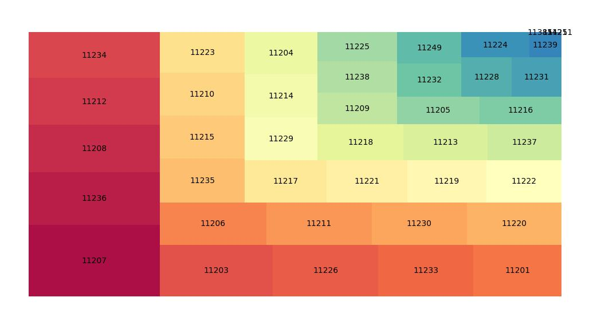

Examining the Brooklyn Borough Further
Sample of Brooklyn's Data
As the borough with the highest amount of accidents, it is paramount that we dive deeper into the reasoning for this occurrance, using visualizations and data to help us accomplish this task.


Seems like zip 11207 is a real issue
Analyzing the Brooklyn 11207 Hotspot
For this disaster of a zipcode, let's do some further visual analysis before we do some machine learning. When are most of the collisions occurring?

Now that we've seen the extent of the damage, can we examine some factors that may contribute to these injuries? We can get a street like view if we decide to get data like the median household income and such. With low household income, it might explain why the infastructure of the area is so bad.
Looking At Important Dataframes


At a Glance
The zipcode 11249 seems to be missing a lot of the data. 11249 is Williamsburg, which is actually one of the wealthier zipcodes in Brooklyn, so assuming that the data was present it would most likely top the list in Brooklyn. This is supported even further as looking at the previous visuals we see that 11249 has some of least amount of collisions in the hotspot that is Brooklyn. However on the opposite end of the spectrum we have the problem zipcode of 11207 which actually happens to be the fourth lowest zipcode in terms of median household income.